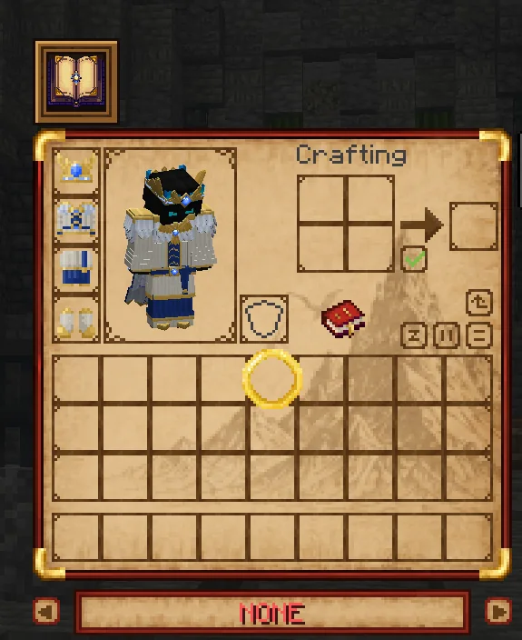
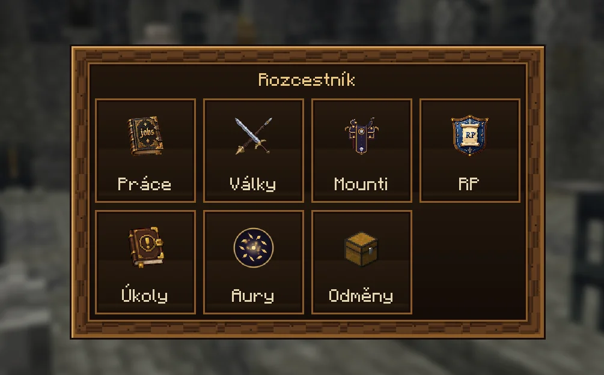

¶Rozcestník
iRozcestník je jedno menu, ze kterého se dostaneš k práci, válkám, mountům, RP, úkolům, aurám i odměnám. Nemusíš si pamatovat žádné příkazy.
![OVĚŘIT] Rozcestník je zatím ve zkoušení a na server se ještě nedostal. Do nasazení ho berte jako „připravuje se“.
¶Jak ho otevřít
Nad inventářem je tlačítko s ikonou knihy. Klikni na něj a otevře se dřevěné okno s dlaždicemi. Zpět do inventáře se dostaneš klávesou Esc nebo kliknutím mimo okno.

¶Co v něm najdeš

| Dlaždice | Co otevře |
|---|---|
| Práce | Kroniku prací |
| Války | menu válek (Války) |
| Mounti | menu Mountů |
| RP | menu RP systému |
| Úkoly | Deník úkolů (Questy) |
| Aury | menu Aur |
| Odměny | Schránku odměn (Odměny) |
iDlaždice Aury a Odměny se zobrazí jen tehdy, když je příslušný mod na serveru. Dlaždici GM vidí pouze správci.
© Všechna práva vyhrazena tvůrcům módů, naším výtvorem je pouze zprostředkování serveru. Nejedná se o oficiální produkt Minecraftu. Nejsme spojeni s Mojang Studios.